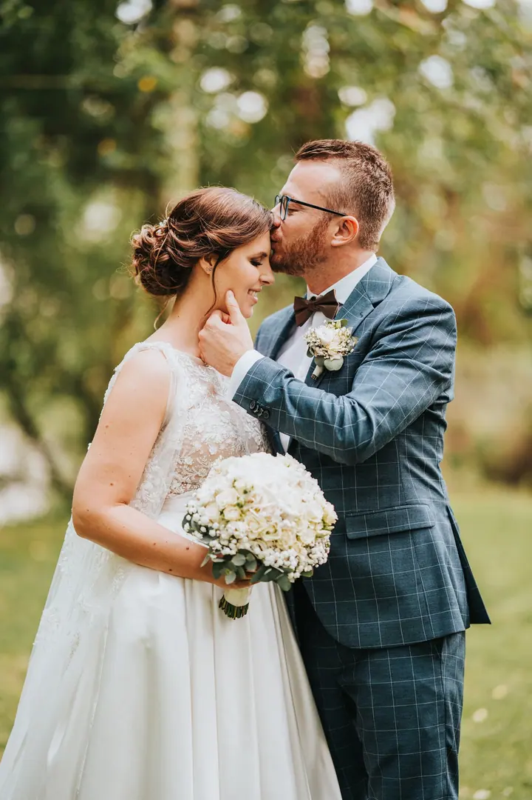
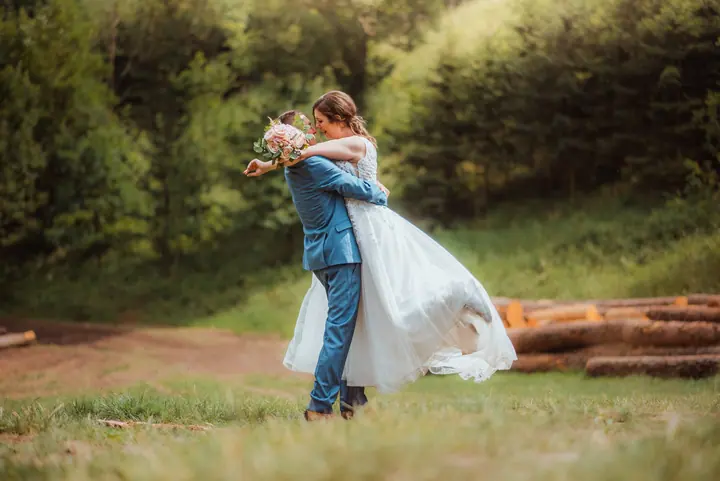
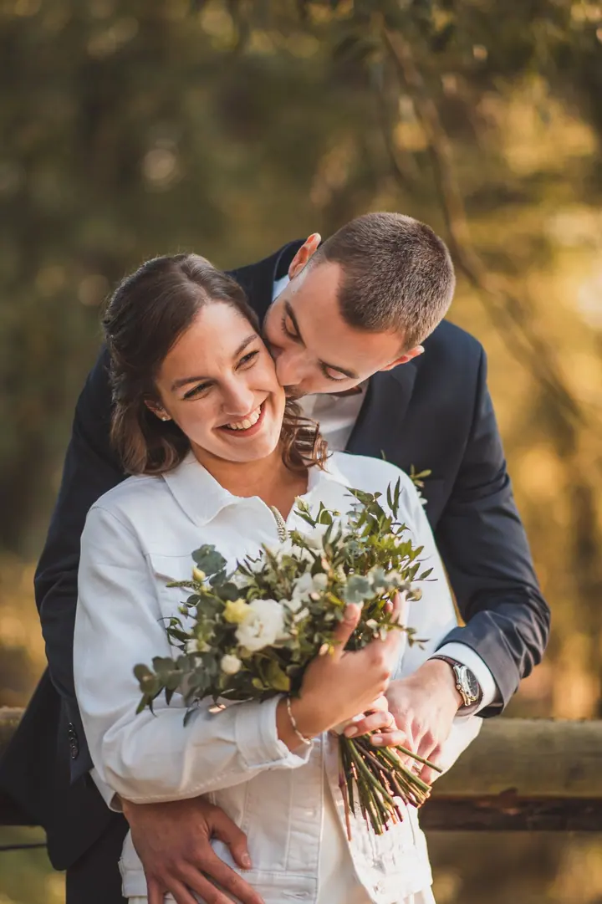

jedna
Svatební fotografie
Fotím svatby pro páry, které chtějí svůj den opravdu prožít. Celodenní focení od příprav až po večerní zábavu, bez křeče a umělých póz.

Svatební a portrétní fotografka · Ústecký kraj, Liberecký kraj, okolí Prahy

Jmenuji se Nikol Pospíšilová a fotím svatby pro páry, které chtějí svůj den opravdu prožít. Miluju přírodu a lesy a ráda to promítám do fotek. Záleží mi na přirozených momentech, dotecích a smíchu, ne na strojených pózách.
Více o mně
Co fotím
jedna
Fotím svatby pro páry, které chtějí svůj den opravdu prožít. Celodenní focení od příprav až po večerní zábavu, bez křeče a umělých póz.
dvě
Vyrazíme spolu na procházku do přírody nebo do parku, kamkoli, kde se budete cítit uvolněně. Zachytím momenty plné lásky, smíchu a blízkosti.
tři
Rodinné focení plné hravosti a dětské energie, těhotenské focení v klidné atmosféře. Fotím také novorozence u vás doma.
Portréty vašich psů i koní pro rodinnou vzpomínku nebo postojové fotky pro chovatele. S trpělivostí a respektem k jejich povaze.

Nechci vás stylizovat, chci vás zachytit takové, jací jste.


Za objektivem
Focení se věnuji od roku 2016 a od roku 2021 fotím svatby naplno. Dnes mám za sebou víc než 100 odfocených svateb. Nechci být jen cizím člověkem, který vám vyfotí svatbu. Chci být přirozenou součástí vašeho dne a zachytit opravdové emoce a okamžiky, které se už nebudou opakovat.
Nejvíc mě baví párové focení bez křeče a umělých póz, hry, spontánní momenty a večerní zábava plná tance a energie. Nechci vás stylizovat, chci vás zachytit takové, jací jste. Díky zkušenostem pro mě není překážkou fotit ani ty, kdo nejsou zvyklí stát před fotoaparátem. Celým dnem vás ráda provedu tak, aby pro vás focení bylo příjemné.
Kromě svateb fotím páry, rodiny, těhotenské a novorozenecké focení a také psy a koně. Nejčastěji mě najdete v Ústeckém a Libereckém kraji a v okolí Prahy, ale za vámi ráda přijedu kamkoli po celé republice.
Nikol
Pošlete mi e-mail s termínem a představou o vašem dni. Pokud si nejste jistí balíčkem, ráda vám poradím, který bude pro vás ten pravý.
Ke každému svatebnímu balíčku máte slevu na předsvatební focení. Poznáme se, zvyknete si na foťák a ve svatební den už budete v klidu.
Fotím od příprav až po večerní zábavu a rozsah vždy přizpůsobím tomu, jak chcete svůj den prožít. Držím se v pozadí, abyste se mohli věnovat hlavně jeden druhému.
Pečlivě upravené fotky v barevné i černobílé podobě dostanete v online svatební galerii, kterou snadno nasdílíte i hostům.
Portfolio
Fotografie jsou ilustrační
Otázky
Kompletní balíček v hlavní sezóně (duben až říjen) stojí 25 000 Kč. Zahrnuje 11 hodin focení, 500 až 700 upravených fotografií a slevu 50 % na předsvatební focení. Pro komornější svatby nabízím střední balíček za 19 500 Kč.
Ano. Pro svatby od listopadu do března mám dva zvýhodněné balíčky: velký za 17 000 Kč (9 hodin focení) a obřadový za 8 500 Kč.
Ano, obřadový balíček za 10 000 Kč zahrnuje 3 hodiny focení a 100 až 150 upravených fotografií. V hlavní sezóně je dostupný ve všední dny, soboty od května do září jsou vyhrazeny pro půldenní a celodenní focení.
Video sama netočím, ale když hledáte sehraný tým foto a video, ráda vám doporučím kolegy, se kterými mám zkušenosti ze svateb. Stačí to zmínit v e-mailu.
Termíny pravidelně vypisuji v rezervačním kalendáři, nebo mi napište e-mail. Portrétní balíčky začínají na 2 500 Kč za 10 fotografií. V hlavních svatebních měsících (červen až srpen) se domlouváme individuálně.

Napište pár vět o tom, co si představujete. · +420 776 163 947